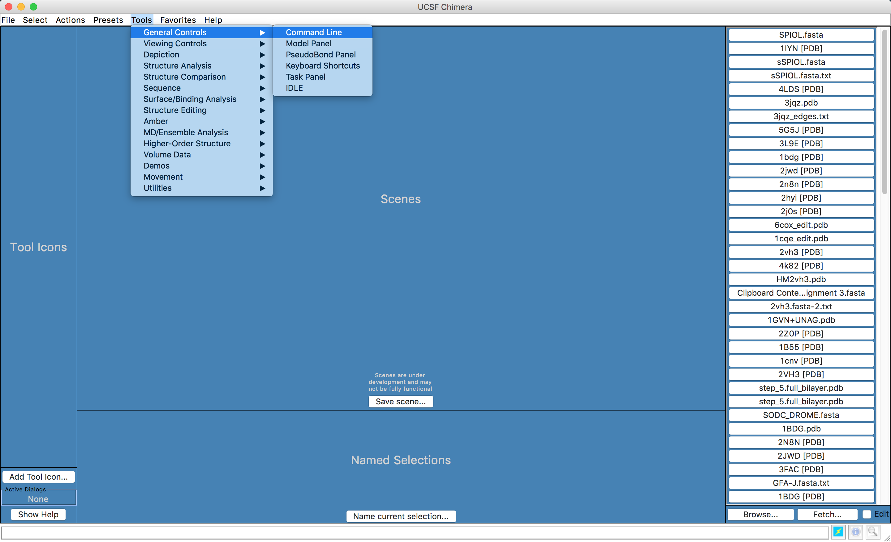
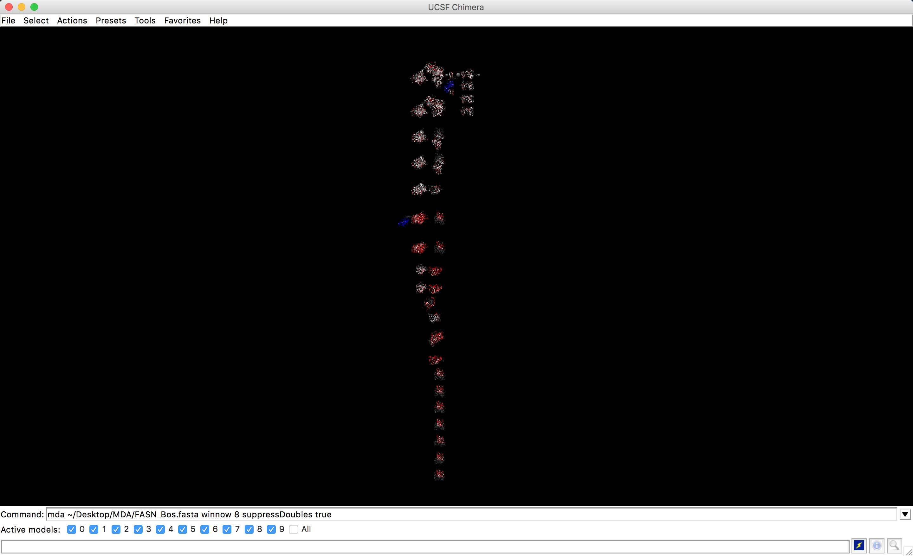

Modelagem com o Multidomain Assembler
O Multidomain Assembler (MDA) (Hertig et al. 2015) é um programa para abordar os problemas especiais que surgem durante a modelagem de proteínas com grande número de domínios. Tais problemas incluem:
- Organizar espacialmente estruturas não sobrepostas.
- Obter a melhor cobertura para um modelo quando existem centenas de estruturas disponíveis para algumas regiões de seqüência, enquanto outras regiões têm poucos homólogos distantes.
- Montar um único modelo de uma proteína com múltiplos domínios e diversos templates disponíveis.
O MDA automatiza as tarefas de pesquisa, visualização e seleção destes modelos e, em seguida, gera modelos multidomínios. Ele é bem simples de executar, sendo parte integrada ao UCSF CHIMERA (Hertig et al. 2015).
Em seus passos iniciais, o MDA também serve para obtenção de um resumo visual das estruturas disponíveis para uma seqüência de consulta, filtrada opcionalmente por critérios como o escore do BLAST e % de identidade, dispostos horizontalmente do N para o C-terminal. Os prováveis templates sobrepostos são organizados de maneira vertical e os segmentos de sequência sem cobertura estrutural são indicados com esferas. Adicionalmente, o MDA também mostra um alinhamento dos vários templates com a sequência alvo, o que por si só já é um resultado extremamente útil (Fonte: https://www.cgl.ucsf.edu/chimera/features.html).
Para demonstrarmos a utilização do MDA, modelaremos a proteína Ácido Graxo sintase do Boi (Bos taurus), Q71SP7 (FAS_BOVIN).
>Q71SP7_FAS_BOVIN
MEEVVITGMSGKLPESENLEEFWANLIGGVDMVTDDDRRWKAGLYGLPRRSGKLKDLSRF
DASFFGVHPKQAHNMDPQLRLLLEVTYEAIVDAGINPASIRGTNTGVWVGVSGSEASEAL
SRDPETLVGYSMVGCQRAMLANRLSFFFDFKGPSITLDTACSSSLLALQRAYQAIQRGEC
AMAIVGGVNIRLKPNTSVQFMKLGMLSPEGTCKFFDASGNGYCRAKAVMAILLTKKSLAR
RVYATILNAGTNTDGCKEKGVTFPSGEAQEQLISSLYKPAGLDPETLEYVEAHGTGTKVG
DPQELNGIVQALCGTRQSPLRIGSTKSNMGHPEPASGLAALAKVLLSLEHGLWAPNLHFH
NPNPKIPALQDGRLQVVDRPLPVLGGNVGINSFGFGGSNVHVILQPNSQPLPPPAPHAAL
PRLLRASGRTLEGVQGLLELGLQHSQNLAFVSMLNDIATPSPAAMPFRGYAVLGSQGGSQ
KVQQVLAGKRPLWFICSGMGTQWRGMGLSLMRLSRFRDSILRSDEAVKPLGLQVSQLLLS
TDEAIFDDMVISFVSLTAIQIALIDLLTSMGLQPDGIIGHSLGEVACGYADGCISQEEAI
LSAYWRGQCIKEANIPPGAMAAVGLTWEECKQRCPPGIVPACHNCIDTVTISGPQASMLE
FVQQLKQEGVFAKEVRTGGMAFHSYFMDAIAPMLLQQLKKVIREPQPRSPRWLSTSIPET
QWQESLARTFSAEYNVNNLVSPVLFQEALWRVPEDAVVLEIAPHALLQAVLKRGLKSSCT
IIPLMKKDHRDNLEFFLSNVGQLYLTGIDVNPNGLFPPVEFPAPRGTPLISPHIKWDHSQ
TWDVPTAEDFPSGSSSSSATIYKIDINPESPDHYLVDHCIDGRIIFPGTGYLCLVWKTLA
RALDQNMEHTPVVFEDVTLHQAVILPKTGIVLLKVRLLEASCTFEVSENGNLIASGKVYQ
WEDPNPKLFDNRYGPDPATPVDPTTAIHLSRGDVYKELQLQGFNYGPYFQGILEASSEGN
TGQLLWKDNWVTFMDTMLQMSILAPSKRSLRLPTRITAIYIHPATHQQKLYTLQDKTQVA
DVVINRCLDTTVAGGIYISRIHTSVAPRHQQEQLVPILEKFCFTPHVETGCLAGNLALQE
ELQLCVGLAQALQTRVAQQGIKMVVPGLDGAQAPQEAPQQGLPRLLATACQLQLNGNLQM
EMGQILAQERALLCDDPLLSGLLNSPALKACVTLALENMTSLKMKVVLAGDGQLYSRIPT
LLNTQPLLELDYTATDRHPQALEAAQAKLQQLDITQGQWDPSDPAPSNLGGANLVVCNYA
LASLGDPATAVGNMVAALKEGGFLLLHTLLRGHPLGETVTFLTCPEPQQGQRHLLSQDEW
ERLFAGASLHLVALKKSFYGSVLFLCRRLAPLDSPIFLPVEDTSFQWVDSLKNILADSSS
RAVWLMAVGCTTSGVVGLVNCLRKEPDGHRIRCVLVSNLNSTSPIPETDPKSLELQKVLQ
SDLVMNVYRDGAWGAFRHFPLEQDKPEEQTEHAFINVLTRGDLSSIRWVCSPLRHSQPTA
PGFQLCTIYYASLNFKRNHAGHGQAVPRRHPRNWASRNCLLGMEFSGRDASGKRVMGLVP
AEGLATSTLVPQSFLWDVPSNWTLEEAASVPVVYSTAYYALMVRGRMQPGETVLIHSGSG
GVGQAAIAIALSLGCRVFPLVGSAEKRAYLQSRFPQLNETSFANSRDTSFEQHVLWHTAG
KGADLVLNSLAEEKLQASVRCLAQHGRFLEIGKFDLSKNHPLGMAIFLKNVTFHGILLDS
LFEENNTMWQEVSTLLKAGIRKGVVQPLKRTVFPRTQAEDAFRYMAQGKHIGKVVIQVRE
EEQEAVLHGTKPTQMVALCKTFCPAHKSYIITGGLGGFGLELAHWLVERGAQKLVLTSRS
GIRTGYQARQVHEWRRQGVQVLVSTSDVSTLDGTRSLITEAAQLGPVGGIFNLAVVLRDA
MLDNQTPEFFQDVNKPKYNGTLNLDRVTREACPELDYFEVFSSVSCGRGNAGQTNYGFAN
STMERICEKRRHDGLPGLAVQWGAIADVGLLMELKGTKDKAIGGTLPQRITSCMEVLDLF
LNQPHPVLSSFVLAEKATSRGPSGSHQDLVKAVTHILGIRDLATVNLDSSLSDLGLDSLM
GVEVRQMLEREHNLLLSMREIRQLTIHKLQEISAQAGTADELTDSTPKFGSPAQSHTQLN
LSTLLVNPEGPTLTRLNSVQSSERPLFLVHPIEGSTTVFHSLATKLSIPTYGLQCTGAAP
LDSIQSLATYYIECIRQVQPEGNYRIAGYSYGACVAFEMCSQLQAQQNAGPTNNSLFLFD
GSHTFVMAYTQSYRAKLNPGCEAEAEAEAMCFFMQQFTEAEHSRVLEALLPLGDLEARVA
ATVELIVQSHAGLDRHALSFAARSFYHKLRAAEEYTPRATYHGNVTLLRAKMGSAYQEGL
GADYNLSQVCDGKVSVHIIEGDHRTLLEGSGLESILSIIHSSLAEPRVSVREG
A enzima FASN de mamíferos possui sete sítios ativos para reações distintas, em domínios separados. Tudo isto em uma única cadeia polipeptídica. Os múltiplos domínios atuam como enzimas distintas. A enzima final forma um homodímero. Mais informações pode ser obtidas do seu registro Uniprot (Q71SP7 (FAS_BOVIN)).
Abaixo seguem as etapas para a modelagem desta proteína.
Preparando os Arquivos
- Crie uma pasta no desktop chamada MDA.
- Dentro desta página, crie um arquivo no gedit e cole a sequência acima. Salve-o como
FASN_Bos.fasta.
Esta pasta MDA será também onde os arquivos de saída do programa serão escritos.
Executando o MDA
O MDA é executado via linha de comando no UCSF Chimera. Para isso, precisamos mostrar a linha de comando no programa e executar as etapas abaixo:
- Abra o UCSF Chimera.

- A linha de comando do UCSF Chimera irá aparecer embaixo da janela.
- Nesta caixa, digite o seguinte comando:
mda ~/Desktop/MDA/FASN_Bos.fasta winnow 8 suppressDoubles true
Ele deverá ficar de acordo com a figura abaixo.

Não esqueça de conferir se o caminho do diretório está correto.
O MDA também pode ser executado utilizando como entrada um código Uniprot.
- O comando está sendo executado com duas opções:
- winnow 8 Acertos máximos por região. Valores mais baixos retornam menos hits.
- suppressDoubles true: Manter apenas o hit de maior pontuação para uma entrada do PDB.
Descrições adicionais dos comandos do MDA e suas opções, podem ser encontradas AQUI.
- Pressione a tecla
ENTERpara que o comando seja executado.
Nesta etapa o MDA faz uma busca BLAST contra o banco PDB para encontrar estruturas conhecidas com sequência similar, para toda extensão da sequência alvo. Depois, ele importa as estruturas do PDB correspondentes para o UCSF Chimera e as coloca da esquerda para a direita de acordo com as correspondências de seqüência ao longo da consulta do N ao C-terminal.
Na pasta de saída especificada, o MDA grava os seguintes arquivos de saída:
- O alinhamento pseudo-múltiplo de sequência do BLAST no formato FASTA alinhado.
- Um arquivo de texto contendo informações da execução.
Logo após a execução, a seguinte caixa de diálogo irá aparecer:

- Clique em
Yese espere que todos os arquivos PDBs sejam abertos.
Quando terminado o processo, os modelos alinhados de acordo com a sequência irão aparecer na área de trabalho do UCSF Chimera, além de duas novas janelas: uma com o alinhamento e a outra já com a interface para modelagem com Modeller.
- As estruturas encontradas pela busca BLAST aparecerão da seguinte maneira, sempre seguindo a sequência alvo, do N para o C-terminal.

Dê um zoom e veja as estruturas com mais detalhes.
- A janela de alinhamento múltiplo (MAV) aparecerá com a seguinte:
- Verifique e navegue pelo alinhamento, para confirmar se toda a sequência da FASN_Bos teve estrutura correspondente.
Fazendo a modelagem a partir do resultado do MDA
O restante dos passos é bem similar aos descritos no tutorial de Modelagem Comparativa 1.
- Na janela aberta da interface com o Modeller, selecione as opções de acordo com a figura abaixo:
Não esqueça de colocar o caminho certo do executável do Modeller.
Deixe apenas como um único modelo, pois esta modelagem costuma ser demorada.
- Clique em
OKe espere os resultados. - No final da modelagem, aparecerão o modelo na área de trabalho do UCSF Chimera e a janela Modeller Results.

Salvando o Modelo
Salve o modelo obtido, seguindo os passos abaixo:
- Na janela principal do UCSF Chimera vá em:
- Select > Chain > (noID).

- Depois vá em:
- Select > Invert (all models).
- Depois de selecionados todos os modelos, siga o caminho abaixo:
- Select > Actions > Atoms/Bonds > Delete.
Agora você estará apenas com a estrutura que acabou de ser modelada e as estruturas templates foram apagadas.
- Dê um foco na sua estrutura com o seguinte passo:
- Clique em Actions > Focus.
Agora siga os passos abaixo:
- Vá em Tools > General Controls > Model Panel.
- Uma nova janela irá aparecer, chamada Model Panel.
- Selecione as estruturas classificadas como Gap e aperte a tecla
Closeao lado. Faça isso em todas que aparecer. Até que a janela fique semelhante a abaixo:

- Clique em
write PDB. Na janela seguinte, dê um nome ao arquivo e salve o PDB.